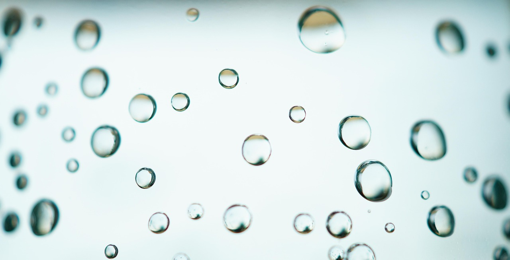

Beyond the Surface: The Chemistry of Cleaning
Most of us think of water as a simple tool to wash away dirt. We use soap to create bubbles and friction to scrub, assuming the water is just the carrier for the chemicals. However, in the world of professional high-purity cleaning, the water itself is the cleaning agent. This is due to a phenomenon known as the "Hungry Water" effect. By removing the dissolved minerals from ordinary water through deionization, we create a liquid that is chemically unbalanced and aggressively seeks to return to its original state by dissolving and absorbing everything in its path.
What Makes Water "Hungry"?
To understand why deionized water is so effective, we have to look at its ionic state. Ordinary tap water is "satisfied." It is already saturated with ions—calcium, magnesium, sodium, and more. Because it is already carrying a heavy "load" of dissolved solids, its capacity to dissolve and hold more material is significantly reduced.
Deionized (DI) water is "empty." During the deionization process, we strip away all of those dissolved minerals. This creates an ionic void. Nature abhors a vacuum, and on a molecular level, DI water "wants" those ions back. When this hungry water comes into contact with glass, metal, or any dirty surface, it acts like a chemical vacuum, aggressively pulling dirt, dust, pollen, and even mineral deposits off the surface and into suspension within the water molecules.
The Mechanism of Action
How does this work in a practical cleaning scenario? When you use deionized water in a water-fed pole system or a final rinse for auto detailing, several things happen simultaneously:
1. Dissolution
Many types of environmental dirt are actually mineral-based or have mineral "anchors" that hold them to the glass. Hungry water quickly dissolves these anchors, causing the dirt to lose its grip on the surface. Unlike tap water, which might just move the dirt around, DI water breaks it down at the molecular level.
2. Absorption and Suspension
Once the dirt is broken down, the hungry water molecules surround and encapsulate the particles. Because the water has such a high capacity for absorption (due to being at 0 TDS), it can carry a massive amount of contaminant away from the surface without becoming saturated. This is why a high-volume rinse with DI water is so much more effective than a quick spray with a garden hose.
3. Surface Tension and Wetting
Pure water has a slightly different surface tension than tap water. It exhibits superior "wetting" properties, meaning it can penetrate deeper into the microscopic pores of the glass. Glass might look smooth to the naked eye, but under a microscope, it is a landscape of valleys and ridges. Hungry water flows into these crevices, pulling out dirt that traditional cleaning methods would leave behind.
Why Fewer Chemicals are Needed
The beauty of the hungry water effect is that it often eliminates the need for detergents and surfactants entirely. In traditional window cleaning, soap is used to reduce the surface tension of tap water and help it lift dirt. With DI water, the water's natural "hunger" does that work. This offers several massive advantages:
- No Residue: Soap leaves a sticky film. Hungry water leaves nothing but pure glass.
- Stays Cleaner Longer: Without that sticky soap film, dust and pollen have nothing to stick to, meaning your windows stay clean for weeks longer.
- Environmentally Friendly: You are cleaning with nothing but H2O. There are no chemicals running off into the soil or groundwater.
Practical Demonstrations of the Effect
You can see the hungry water effect in action by comparing a final rinse of tap water versus DI water on a car windshield. Tap water will "bead" up and stay in place, eventually drying into hard water spots. DI water tends to "sheet" off the surface. The water that remains is so pure that it evaporates completely clear, having already "scoured" the surface during its flow. This is the essence of a spot-free rinse.
Conclusion: The Ultimate Natural Solvent
Deionized water is more than just "clean" water; it is a specialized tool designed for maximum cleaning efficiency. By understanding and utilizing the hungry water effect, professional cleaners can achieve results that are physically impossible with ordinary methods. Whether you are a window cleaner, a lab technician, or a high-end auto detailer, using the science of how DI water works allows you to work faster, safer, and with a level of precision that sets you apart from the competition.

Experience the Power of Hungry Water
Ready to see the difference for yourself? Our high-purity deionized water is ready to tackle your toughest cleaning challenges. Get the professional edge today.
Shop High-Purity Water